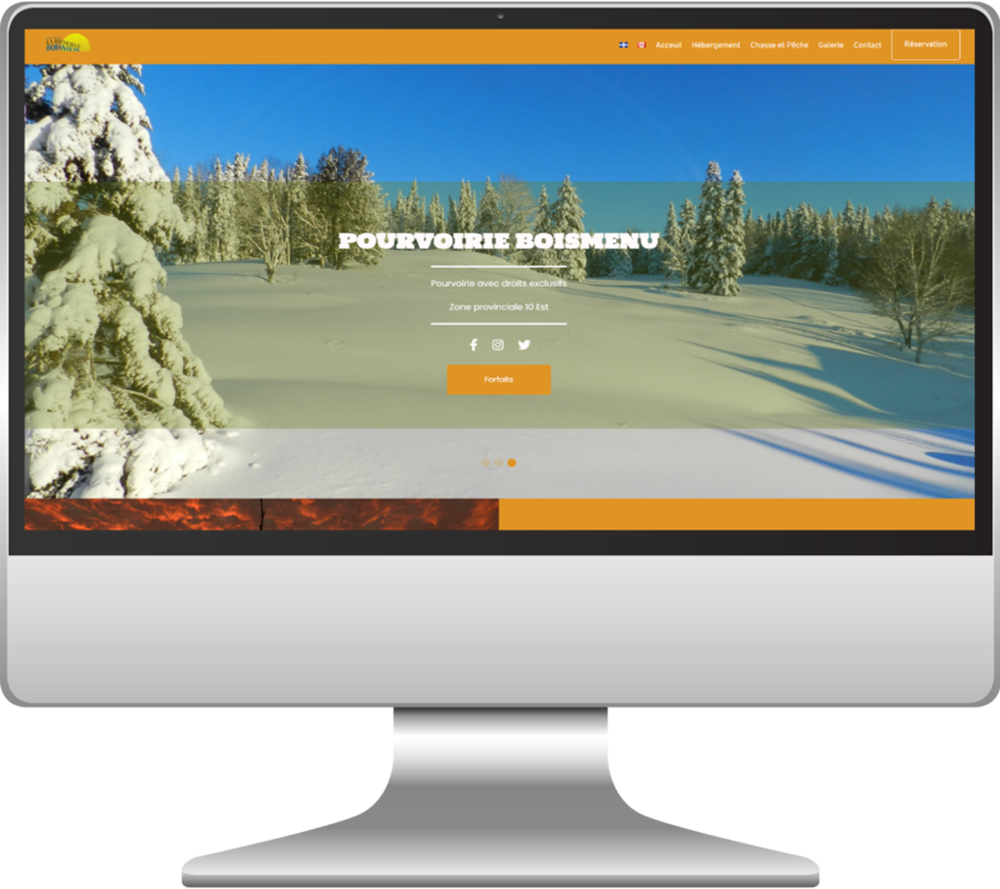

Refonte d’un site
WordPress | HTML/CSS/JS
La refonte d’un site complet existant. La pourvoirie boismenu avait un site non fonctionnel, des icônes invisibles. J’ai refait le site tout en respectant leur direction artistique et leurs fonctionnalités. Ce projet a été réalisé dans le cadre de mon cours ‘Production Web'. Pour la programmation j’ai utilisé HTML/CSS/JS, puis PHP pour l’intégrer dans WordPress.
Crédit : Cédric Ménard
Logiciels